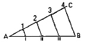
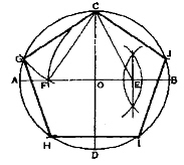
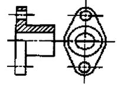
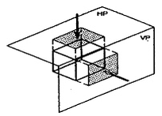

컴퓨터그래픽스운용기능사 (2008-02-03 기출문제)
1과목: 산업디자인 일반
1. 산업혁명의 결과로 자연의 파괴, 기계제품의 범람, 수공기술의 저하를 비판하면서, 특권 계급에게만 이윤을 주는 기계를 파괴해야 한다고 하며 수공예의 복귀를 주장한 시조는?
- 미술공예 운동
- 아르누보
- 시세션
- 독일공작 연맹
(정답률: 83%)

2. 매슬로우 욕구 5단계 설 중 존경의 욕구에 속하는 것은?
- 명예
- 애정
- 부서
- 자아실현
(정답률: 78%)
3. 다음 중 일반적으로 디자인을 3대 영역으로 분류할 때 해당되지 않는 것은?
- 제품 디자인
- 시각 디자인
- 환경 디자인
- 의상디자인
(정답률: 88%)
4. 다음 중 기업 경쟁에 우위를 차지하고, 고객의 욕구를 충족시키기 위한 쟁점 원칙이 아닌 것은?
- 생산 상품이 적정할 것
- 공급 가격이 적정할 것
- 공급 수량을 최대한 많이 할 것
- 공급 장소가 적합할 것
(정답률: 87%)
5. 디자인 요소 중 선에 관한 설명으로 바른 것은?
- 수직선은 평화와 안정감을 더해준다.
- 수평선은 우아하고 유연하며 동적인 표정을 나타낸다.
- 사선은 동적이고 불안정한 느낌을 준다.
- 포물선은 고결, 희망을 나타내며, 긴장감을 준다.
(정답률: 82%)
6. 아름다운 비례로서 고대 그리스 시대부터 시각미술 속에 적용되어온 중요한 비례는?
- 8등분할
- 캐논분할
- 구형분할
- 황금분할
(정답률: 94%)
7. 렌더링에 관한 설명 중 올바른 것은?
- 머리에 떠오르는 이미지를 그리는 것을 말한다.
- 디자인의 개념을 나타내는 이미지 스케일을 말한다.
- 목업을 제작하기 위하여 그리는 도면의 일종이다.
- 실제 제품과 똑같은 상태의 형태, 재질감, 색상 등을 실감 있게 표현하는 것이다.
(정답률: 87%)
8. 포장 디자인의 기능이 아닌 것은?
- 전달성
- 유용성
- 생산성
- 보호와 보존성
(정답률: 77%)
9. 다음 중 조명에 관한 설명으로 맞는 것은?
- 직접 조명 - 광원을 감싸는 조명기구에 의해 상하 모든 방향으로 빛이 확산되는 방식
- 반직접 조명 - 광원을 어떤 물체에 비추어 그 반사광으로 조명하는 방식
- 간접 조명 - 광원의 90% 이상을 물체에 비추어 투사 시키는 방식
- 반간접 조명 - 빛의 일부가 직접 투사되고 나머지는 대부분 반사되는 방식
(정답률: 55%)
10. 디자인 초기단계에서 디자이너 자산이 전개하는 아이디어를 확인하기 위하여 손쉬운 재료로 빠른 시간 내에 만드는 러프 목업의 종류가 아닌 것은?
- 프로토타입 목업
- 스터디 목업
- 컨셉 목업
- 스킴 목업
(정답률: 70%)
11. 디자인 하는 대상의 공적, 용도, 기능, 표상 등을 말하는 디자인 구성요소는?
- 상대적 요소
- 실질적 요소
- 형식적 요소
- 내용적 요소
(정답률: 51%)
12. 캘린더에 사용되는 타이포그래피 선택의 유의점과 거리가 먼 것은?
- 쉽게 인지되는지의 가독성 검토
- 숫자와 숫자 사이의 간격을 가독성의 입장에서 고려
- 화려하고, 튀도록 고려하여 선정
- 일러스트레이션과 조화를 이룰 수 있는 서체의 선정
(정답률: 90%)
13. 다음 디자인의 조건 중 합목적성에 대한 설명으로 올바른 것은?
- 합목적성은 비합리성과 같은 조건이다.
- 심미적으로 개선, 발전시키는 것이다.
- 미의식으로 개성을 창출하는 것이다.
- 사용목적을 명확하게 하는 것이다.
(정답률: 86%)
14. 면은 공간을 구성하는 단위이며, 공간 효과를 나타내는 중요한 요소이다. 다음 중 적극적인 면(Positive Plane)은 어느 것인가?
- 점의 밀집
- 선의 집합
- 점의 확대
- 입체화된 선
(정답률: 70%)
15. 제품디자인의 창조적 발상 방법의 시네틱스(Synectics)사고 방법이 아닌 것은?
- 직접적 유추
- 의인적 유추
- 간접적 유추
- 상징적 유추
(정답률: 39%)
16. 다음 중 잡지 광고의 특징이라 볼 수 없는 것은?
- 광고의 대상을 판단하기가 쉽다.
- 광고가 독자의 눈에 띌 가능성이 가장 높다.
- 광고 효과가 다른 매체에 비해 오래 지속될 수 있다.
- 상품과 가까운 시각적 재현이 가능하다.
(정답률: 51%)
17. 다음 중 소비자가 물건을 구입할 때의 구매 심리 과정과 가장 거리가 먼 것은?
- 전시(Display)
- 주목(Attention)
- 기억(Memory)
- 흥미(Interest)
(정답률: 83%)
18. 다음 중 환경디자인의 주된 영역이 아닌 것은?
- 섬유패턴 디자인
- 점포 디자인
- 조경 디자인
- 도시 디자인
(정답률: 86%)
19. 다음 중 바우하우스의 성격이 조형 대학으로서 디자이너를 양성하는데 있었던 시기는?
- 제1기 바우하우스
- 제2기 바우하우스
- 제3기 바우하우스
- 뉴 바우하우스
(정답률: 68%)
20. 주거공간을 계획하기 전 고려할 사항으로 거리가 먼 것은?
- 전통성을 먼저 재현한다.
- 동선을 고려한다.
- 가구를 효율적으로 배치할 수 있도록 한다.
- 가족형태, 연형, 취미의 변화를 예상하여 계획한다.
(정답률: 89%)
2과목: 색채 및 도법
21. 다음 평면도법은 무엇을 하기 위한 것인가?

- 직선의 2등분
- 직선의 n등분
- 수직선 긋기
- 각의 2등분
(정답률: 90%)
22. 색채의 온도감에 대한 설명 중 맞는 것은?
- 파장이 긴 쪽이 따뜻하게 느껴진다.
- 보라색, 녹색 등은 한색계이다.
- 단파장이 따뜻하게 느껴진다.
- 색채의 온도감은 색상에 의한 효과가 가장 약하다.
(정답률: 73%)
23. 도면과 같이 원에 내접하는 정 5각형을 그리기 위해 E를 구하고자 한다. 맞는 것은?

- AB, CD를 긋고 FB를 3등분 한다.
- AB, CD를 긋고 OB를 2등분 한다.
- OC, OD를 긋고 OB를 2등분 한다.
- OC, CB를 긋고 OB를 2등분 한다.
(정답률: 81%)
24. 색의 3속성에 대한 설명 중 틀린 것은?
- 색상, 명도, 채도를 말한다.
- 색상을 둥글게 배열한 것을 색상환이라고 한다.
- 순색에 무채색을 섞으면 채도가 높아진다.
- 먼셀 표색계의 무채색 명도는 0~10단계이다.
(정답률: 81%)
25. 점을 섞어가며 그림을 그린 인상파 화가들의 그림과 관련된 혼합 기법은?
- 가산 혼합
- 감산 혼합
- 병치 혼합
- 회전 혼합
(정답률: 85%)
26. 1소점 투시도법에 관한 설명으로 가장 올바른 것은?
- 양면에 특징이 있는 제품 등을 표현하기에 알맞다.
- 화면에 대한 경사각에 따라 45˚, 30˚~60˚ 등의 표현방법이 있다.
- 유각 투시도법이라고도 한다.
- 한쪽 면에 특징이 집중되어 있는 물체를 표현하기에 알맞다.
(정답률: 65%)
27. 비렌(Birren Faber)의 색채 공감감에서 식당 내부의 가구 등에 식욕이 왕성하도록 유도하기 위한 가장 좋은 색채는?
- 보라색
- 노랑색
- 주황색
- 파랑색
(정답률: 84%)
28. 다음 중 한 색상의 명도와 채도를 변화시킨 배색으로 하늘색, 코발트블루, 남색의 조합 등 무난한 배색 기법은?
- 톤 온 톤(Tone on Tone) 배색
- 도미넌트(Dominant) 배색
- 토널(Tonal) 배색
- 비콜로르(Bicolore) 배색
(정답률: 81%)
29. 단면도에 대한 설명 중 틀린 것은?
- 보다 명백하고, 보기 쉽게 그려야 한다.
- 가급적 은선을 사용한다.
- 단면적인 것을 명확히 하려면 해칭(hatching)을 한다.
- 원칙적으로 기본 중심선에서 절단한 면으로 나타난다.
(정답률: 74%)
30. 용기와 열정, 생동의 표현, 활력의 원천으로 상징되어온 색은?
- 빨강
- 파랑
- 초록
- 보라
(정답률: 94%)
31. 다음 중 표면색을 나타내는 것이 아닌 것은?
- 빨간 사과
- 파란 하늘
- 노란 장미
- 붉은 벽돌
(정답률: 78%)
32. 다음 중 일반 색명은?
- 하양
- 복숭아색
- 상아색
- 흐린 초록
(정답률: 62%)
33. 다음 중 가장 따뜻한 느낌의 색으로만 나열된 것은?
- 빨강, 주황, 노랑
- 빨강, 파랑, 노랑
- 노랑, 파랑, 초록
- 주황, 빨강, 남색
(정답률: 93%)
34. 먼셀 표색계 5R6/9의 올바른 설명은?
- 명도(V)= 9, 채도(C)= 6의 빨강색
- 명도(V)= 5, 채도(C)= 9의 빨강색
- 명도(V)= 6, 채도(C)= 9의 빨강색
- 명도(V)= 9, 채도(C)= 5의 빨강색
(정답률: 80%)
35. 다음 그림과 같은 단면도의 명칭은?

- 전 단면도
- 반 단면도
- 부분 단면도
- 회전 단면도
(정답률: 54%)
36. 그림과 같이 투상면이 눈과 물체의 사이에 있어 유리 상자 안에 물체를 놓고 밖에서 스쳐보는 상태에서 투상 하는 방법은?

- 제1각법
- 제2각법
- 제3각법
- 제4각법
(정답률: 73%)
37. 다음 중 파장이 가장 긴 색과 짧은 색이 맞게 짝지어진 것은?
- 빨강과 주황
- 빨강과 남색
- 빨강과 보라
- 노랑과 초록
(정답률: 73%)
38. 대상물이 보이지 않는 부분의 모양을 표시할 때 사용하는 선은?
- 실선
- 파선
- 파단선
- 1점 쇄선
(정답률: 69%)
39. 척도의 종류 중 실제 크기보다 크게 그리는 것은?
- 현척
- 축척
- 실척
- 배척
(정답률: 89%)
40. 명시성에 대한 설명 중 가장 올바른 것은?
- 사물이 맑게 보인다.
- 사물이 밝게 보인다.
- 같이 배열했을 때 특별한 효과가 나타난다.
- 멀리서도 눈에 잘 보인다.
(정답률: 84%)
3과목: 디자인 재료
41. 두 종류 이상의 재료를 복합하여 사용하는 복합 재료의 대표적인 적으로 기계적 강도가 매우 뛰어나 욕조, 선박, 정화조 등에 사용하는 재료는?
- 섬유 강화 플라스틱
- 세라믹
- 형상기억 합금
- 합성고무
(정답률: 62%)
42. 탄소가 주 요소가 되는 복합물을 의미하며 특히 탄소와 수소의 결합으로 만들어져 탄화수소(hydrocarbon)라고 부르기도 하는 재료는?
- 무기재료
- 유기재료
- 금속재료
- 유리재료
(정답률: 69%)
43. 화학펄프에 황산바륨과 젤라틴을 바른 것으로 종이 표면에 감광재를 발라 인화지로 쓰이는 종이는?
- 황산지
- 바리타지
- 인디아지
- 글래싱지
(정답률: 59%)
44. 다음 중 합성 수지계 접착제가 아닌 것은?
- 요소
- 알부민
- 실리콘
- 에폭시
(정답률: 52%)
45. 다음 중 금속의 성질이 아닌 것은?
- 비중이 비교적 작다.
- 열 및 전기의 양도체이다.
- 전성과 연성이 좋다.
- 고체 상태에서 결정체이다.
(정답률: 74%)
46. 변성가공으로 종이의 질을 변화시켜 사용 목적에 알맞게 만든 용지가 아닌 것은?
- 유산지
- 아트지
- 벌커나이즈드 파이버
- 크레이프지
(정답률: 48%)
47. 전기의 부도체이지만 표면의 습도량이 크면 전기 저항력이 약해지며, 용융상태에서는 전기를 통하게 되는 재료는?
- 유리
- 플라스틱
- 금속
- 멜라민
(정답률: 53%)
48. 필름 현상에 필요한 도구와 그 용도가 잘못 연결된 것은?
- 암실용 시계 : 야광으로 시간을 측정하는데 필요하다.
- 계량컵 : 화학 용액의 혼합과 희석을 위해 필요하다.
- 세척용 호스 : 필름을 세척할 때 필요하다.
- 온도계 : 암실의 실내 온도를 측정하는데 필요하다.
(정답률: 56%)
4과목: 컴퓨터 그래픽스
49. 컴퓨터 모니터상의 컬러와 인쇄 출력용의 컬러 차이가 생기는 원인이 아닌 것은?
- 모니터의 색상을 구성하는 컬러와 인쇄잉크의 컬러 구성이 다르기 때문에
- 모니터의 색상표현영역(Color Gamut)과 인쇄잉크의 표현 영역이 다르기 때문
- 모니터와 프린터의 켈리브레이션(Calibration)이 부정확하기 때문에
- 모니터의 이미지 전송 속도와 프린터의 처리 속도가 다르기 때문에
(정답률: 72%)
50. 최대 256가지 색으로 제한되는 단점이 있으나, 파일의 압축률이 좋고 인터넷에서 아이콘이나 로고 등 간단한 그래픽 제작시 유용하게 사용되는 포맷(Format) 방식은?
- JPEG
- TIFF
- EPS
- GIF
(정답률: 62%)
51. 다음 중 동영상 파일 포맷이 아닌 것은?
- AVI
- FLA
- MPEG
- NTSC
(정답률: 70%)
52. 데이터를 한번 기록하면 이후에 그 내용을 바꿀 수 없고 읽을 수만 있는 기억장치로서 전원이 차단되어도 내용이 소멸되지 않는 기능을 갖고 있어 비휘발성 메모리하고도 하는 것은?
- RAM
- ROM
- CPU
- LAN
(정답률: 79%)
53. 실제로 인쇄된 이미지가 어떤 색으로 나오게 될지 인쇄 전에 모니터와 출력 시스템을 조정해 주어여 하는데, 이러한 모니터와 출력 시스템 간의 색상 조정 작업은?
- Screen Frequency
- Calibration
- Moire
- Resolution
(정답률: 73%)
54. 컴퓨터에서 어떤 작업을 수행하려고 할 때 일을 구체적으로 실행하기 위한 처리나 동작의 방법 또는 순서가 필요한데 이것을 무엇이라고 하는가?
- Algorithm(알고리즘)
- Aliasing(엘리어싱)
- Alphabet(알파벳)
- Alphameric(알파메릭)
(정답률: 80%)
55. 외부의 광원으로부터 받은 빛의 반사 광선을 제외한 표면자체가 발산하는 빛의 양으로 깜깜한 방에서 물체의 표면을 관찰할 때 빛나는 정도를 뜻하는 것은?
- 색(Color)
- 발광도(luminesoence)
- 광택도(luster)
- 표면 질감(texture)
(정답률: 85%)
56. 컴퓨터에서 사용되고 있는 서체(font)에 관한 설명 중 틀린 것은?
- 비트맵 서체는 하드웨어에 의존하지 않고 고해상도의 출력을 구현하기 위해 개발된 일종의 프로그래밍 언어로 서체의 크기, 자간, 행간, 장평 등 다양한 변형이 이루어져도 해상도의 출력물을 얻을 수 있다.
- 트루타입 서체는 하나의 파일에 비트맵 데이터와 아웃라인 데이터가 통합되어 화면용 폰트와 출력용 폰트를 동일하게 사용할 수 있다는 장점을 가지고 있다.
- 포스트스크립트 서체(PS 서체)는 수학적 기법으로 테두리를 형성한 후 내부를 채우는 아웃라인 방식의 윤곽선 서체이다.
- 트루타입의 서체는 글자의 아웃라인화(도형화)가 가능하여 일러스트레이터나 프리핸드 등의 프로그램에서 트루타입의 서체를 다른 도형처럼 쉽게 변형할 수 있다.
(정답률: 53%)
57. 다음 중 전자 출판(DTP)의 다른 디자인 프로세스로 가장 적절한 것은?
- 자료수집-아이디어스케치-이미지 드로잉과 페인팅-출력-이미지와 텍스트 편집-인쇄
- 자료수집-아이디어스케치-이미지 드로잉과 페인팅-이미지와 텍스트 편집-출력-인쇄
- 자료수집-아이디어스케치-이미지와 텍스트 편집-출력-이미지 드로잉과 페인팅-인쇄
- 자료수집-아이디어스케치-이미지와 텍스트 편집-이미지 드로잉과 페인팅-출력-인쇄
(정답률: 67%)
58. 3D로 모델링된 객체에 재질감을 부여하기 위하여 이미지나 표면재질을 입히는 과정은?
- 포토리얼(photoreal)
- 안티앨리어싱(Anti-Aliasing)
- 매핑(Mapping)
- 패치(Patch)
(정답률: 82%)
59. 그래픽 소프트웨어의 벡터 프로그램 중 일러스트레이터에 대한 설명이 잘못된 것은?
- Adobe 사에서 만든 드로잉 프로그램이다.
- 마이크로소프트의 대표적인 프로그램이다.
- 로고 및 심플 디자인에 많이 쓰인다.
- 포토샵과 더불어 2D 프로그램의 대표적인 소프트웨어 이다.
(정답률: 84%)
60. 그래픽 단말기의 화면 출력에 있어서 화상을 작은 점들로 구성하여 각 점을 켜고 끔에 의해 영상을 표시하는 방식은?
- 랜덤 스캔(random scan)
- 벡터 스캔(vector scan)
- 래스터 스캔(raster scan)
- 리플레쉬 스캔(refresh scan)
(정답률: 55%)